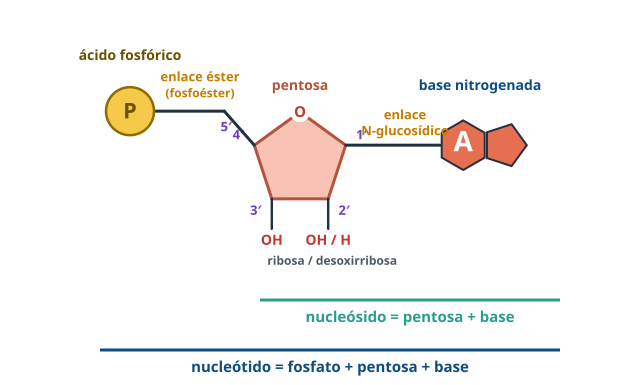
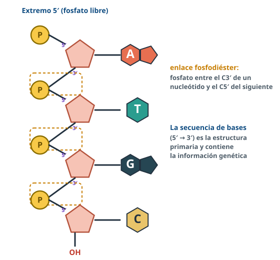

Bloque A · Biomoléculas · Tema 6
Ácidos
nucleicos
Cuatro letras, una doble hélice y las instrucciones de cada ser vivo.
Usa ← → o el espacio para avanzar · F para pantalla completa
Directrices PAU 2026-27 · A.3.4¿Qué tenemos que saber?
Nucleótidos
Componentes y enlaces, bases púricas y pirimidínicas, funciones, ATP.
ADN
Fosfodiéster, doble hélice (Watson, Crick y Rosalind Franklin), compactación.
ARN
Tipos (m, t, r y otros) y diferencias con el ADN.
NucleótidosTres piezas, dos enlaces

- Fosfato + pentosa (ribosa / desoxirribosa) + base.
- Base–pentosa: enlace N-glucosídico (C1′).
- Fosfato–pentosa: enlace éster (C5′).
- Nucleósido = base + pentosa.
NucleótidosBases púricas y pirimidínicas
TrucoT solo en el ADN · U solo en el ARN · las púricas tienen dos anillos.
NucleótidosNo solo forman ADN y ARN
| Función | Ejemplos |
|---|
| Estructural | Monómeros de los ácidos nucleicos |
| Energética | ATP, GTP |
| Coenzimática | NAD⁺, NADP⁺, FAD, coenzima A |
| Mensajero intracelular | AMP cíclico (segundo mensajero de hormonas) |
PAU 2011Si faltan nucleótidos falla el metabolismo: forman parte de coenzimas y del ATP.
NucleótidosEl ATP, moneda energética
Enlace fosfodiésterAsí se forma la cadena

- Fosfato entre el C3′ de un nucleótido y el C5′ del siguiente; se libera agua.
- Extremos 5′ (fosfato) y 3′ (–OH).
- Secuencia 5′→3′ = estructura primaria = información.
ADNLa doble hélice
- Dos cadenas antiparalelas.
- Complementarias: A=T (2 puentes de H), G≡C (3).
- Bases dentro, pentosa-fosfato fuera.
- Dextrógira, 2 nm de ancho, 3,4 nm por vuelta.
ADNQuién descubrió la doble hélice
Rosalind Franklin
Sus imágenes de difracción de rayos X («fotografía 51») revelaron la forma helicoidal y las medidas del ADN.
Watson y Crick (1953)
Construyeron el modelo con esos datos y las reglas de Chargaff (A = T, G = C). Nobel en 1962 con Wilkins; Franklin había muerto en 1958.
Estructura → funciónLa complementariedad permite copiar el ADN (replicación) y leerlo (transcripción).
ADN¿Sabrías explicarlo?
🔥 Dos ADN de igual longitud: el I se desnaturaliza antes que el II. ¿Cuál tiene más guanina? (PAU 2013)
El II: los pares G-C tienen tres puentes de hidrógeno, y hace falta más temperatura para separarlos.
🧬 ¿Por qué el calor separa las dos hebras pero no los nucleótidos de cada hebra?
Se rompen los puentes de hidrógeno; los enlaces fosfodiéster son covalentes y más fuertes.
ADNEmpaquetamiento en eucariotas
ADN + histonas → nucleosomas («collar de perlas») → solenoide → plegamientos → cromosoma metafásico.
ARNTres tipos principales
Otros: ARNhn (precursor del ARNm) y ARN nucleolar (origina el ARNr).
ComparaciónADN frente a ARN
| ADN | ARN |
|---|
| Pentosa | Desoxirribosa | Ribosa |
| Bases | A, G, C, T | A, G, C, U |
| Cadenas | Dos (doble hélice) | Una |
| Dónde | Núcleo, mitocondrias, cloroplastos | Núcleo y citoplasma |
| Función | Almacena y transmite la información | La expresa: transcripción y traducción |
Problemas¿ADN o ARN? ¿Una o dos cadenas?
MétodoT → ADN; U → ARN. Si A = T (U) y G = C → doble cadena; si no, una.
🦠 Un virus tiene A 24 %, G 31 %, T 33 %, C 12 %. (PAU 2013)
ADN (tiene timina) monocatenario (A ≠ T, G ≠ C).
🧪 Un ADN bicatenario tiene 17 % de A. ¿Y las demás? (PAU 2025)
T = 17 %; G = C = (100 − 34) / 2 = 33 %.
Antes del examenErrores que restan puntos
- Confundir nucleósido (sin fosfato) y nucleótido.
- Decir que el ARN tiene timina o que el ADN tiene uracilo.
- Olvidar que las cadenas del ADN son antiparalelas.
- Aplicar Chargaff a una molécula de una sola cadena.
- Decir que el calor rompe los enlaces fosfodiéster: rompe los puentes de H.
¡A practicar!
A, T, G, C
y la vida entera
Repasa el resumen, lee los apuntes completos con las preguntas PAU resueltas y entrénate en BioCelia → Entrenamiento.